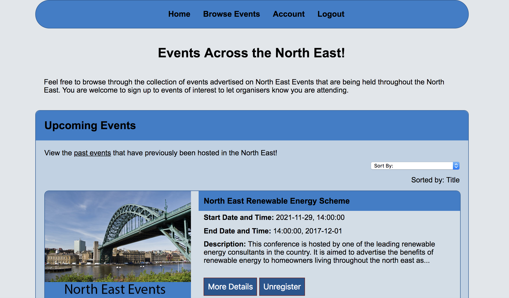
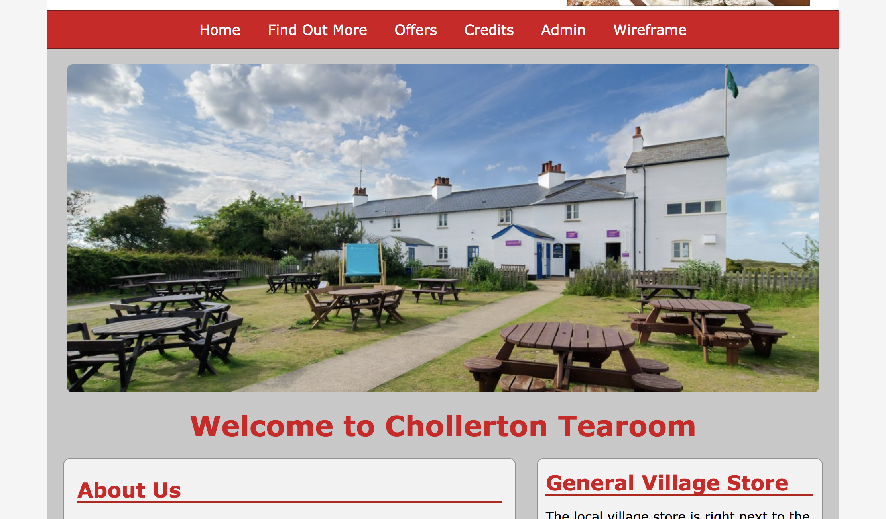

Web development projects throughout University, care taken to ensure inputs are validated and prior to database entry.
Web Projects
Team Project - North East Events
This was a group project, created for the module Professional Software Engineering in my second year of Northumbria University, in Newcastle. Built with HTML, CSS and JavaScript. The aim of the site is to showcase events around the north east that can be created, modied and deleted through an admin area of the site.
Key Skills: HTML, CSS, PHP, JavaScript
Chollerton Tearooms
A website for a tearoom, created for the module Web Technologies in my first year of Northumbria University, in Newcastle. Built with PHP, HTML, CSS and JavaScript.
Key Skills: HTML, CSS, PHP